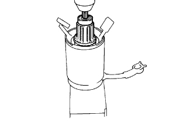
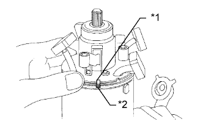
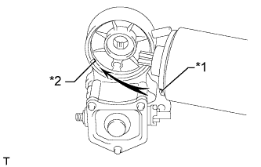

СТАРТЕР > ПОВТОРНАЯ СБОРКА |
| 1. INSTALL STARTER ARMATURE ASSEMBLY |
|  |
Using a press, install the starter armature assembly.
| 2. INSTALL STARTER BRUSH HOLDER ASSEMBLY |
|  |
Align the claw of the brush holder with the claw groove of the starter yoke.
| *1 | Claw |
| *2 | Groove |
Place the brush holder on the starter yoke.
Connect the 4 brushes to the starter brush holder.
Using a screwdriver, hold back the brush spring.
Connect the brush to the starter brush holder.
| 3. INSTALL MAGNET STARTER SWITCH ASSEMBLY |
Apply high-temperature grease to the starter idle pinion, starter clutch, starter armature pinion, retainer and clutch roller.
 |
Insert the steel ball into the starter clutch hole.
Insert the return spring into the starter clutch hole.
Install the starter clutch, idle gear, retainer and clutch roller to the starter drive housing.
Install the starter housing to the magnet starter switch with the 2 screws.
| 4. INSTALL STARTER YOKE ASSEMBLY |
Install a new O-ring to the groove of the starter yoke.
|  |
Align the claw of the starter brush holder with the grooves of the magnet starter switch.
| *1 | Claw |
| *2 | Groove |
Install the 2 new O-rings to the bolts.
Install the 2 bolts.
Connect the terminal C wire with the nut.
Install the terminal 50 wire with the screw.